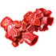
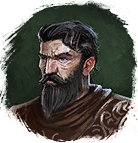

Кристаллы
Предметы / Ресурсы
Открыть в интерактивной вики →
| Вес | 1 |
|---|---|
| Цена | 0 |
Описание
Ресурс для строительства гильдейских построек.
- Можно получить:
- - Обменяв у
 Снабженец 5х
Снабженец 5х  Галит
Галит  1х Кристаллы
1х Кристаллы - - Обменяв у Снабженец 4х
 Морской кристалл 5х Кристаллы
Морской кристалл 5х Кристаллы - - Обменяв у
 Диллег 1х
Диллег 1х 
Арагонит 6х Кристаллы - - Выполнив задание у

Мастер Арканегрин и получить 200хКристаллы
| Сырьё для строительства гильдейских зданий. |
Применение
|
Способы получения
|
 у Хайне в Трентисе,
у Хайне в Трентисе, у Парвана Разоффа в Трентисе.
у Парвана Разоффа в Трентисе.